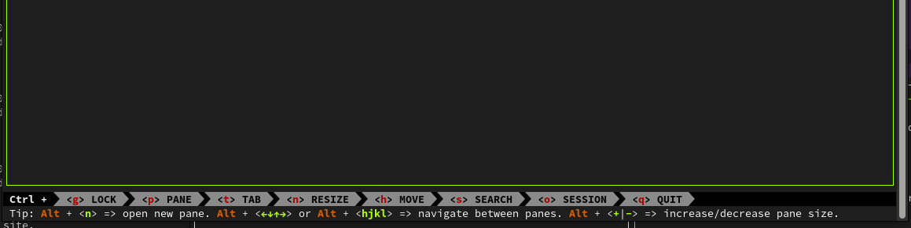

Rust 项目鉴赏: zellij 替代 screen, tmux 的终端工具
2023-01-23T21:44:12+08:00 | 1分钟阅读 | 更新于 2023-01-23T21:44:12+08:00
概述
zellij 是最近用于替代 tmux 的工具，使用 rust 编写 https://zellij.dev/
zellij 名称的直译大概是马赛克瓷砖的意思， 项目原先名称直接就叫：Mosaic
从名字看，它运行起来应该有点马赛克瓷砖，一块一块的样子，运行截图如下
特点
阐述 zellij 的特点之前，先看看官方的 roadmap 的内容，随着时间变化，可能会有不同，不过大体能了解到官方的一些理念
网址:https://zellij.dev/roadmap/
用户体验
Zellij 很注重用户体验，包括终端用户，以及开发者，终端用户层面， zellij 做到了开箱即用，无需过多的学习， zellij 默认支持 tab ， 快捷键默认呈现，并且有下一步操作提示， 默认可以使用鼠标激活 pane, 支持快捷键切换 pane 和 tab ，这样的默认配置用户基本无成本上手， 相比 tmux 好太多， 记得当初使用 tmux 第一步就是去搜索如何显示快捷键，如何使用快捷键… 
Zellij 的键盘操作新手无需学习即可理解， 类似的设计在很多用户友好的软件中都有体现了，下图是 Blender 的操作界面

layout 系统
Zellij 设计了一个 layout 系统， 用户可以设置不同的配置文件（kdl 格式）https://kdl.dev/
kdl 确实很适合描述复杂的配置，类似 ron https://github.com/ron-rs/ron
我测试了几个 layout 配置以及运行效果如下：
monitor.kdl
layout {
pane split_direction="vertical" {
pane command="htop" // panes can have arguments on the same line
pane command="btm"
}
pane command="nu"
}
cargo.kdl
layout {
pane split_direction="vertical" size="60%" {
pane edit="src/main.rs"
pane edit="Cargo.toml"
}
pane split_direction="vertical" size="40%" {
pane command="cargo" {
args "run"
focus true
}
pane command="cargo" {
args "test"
}
}
}
第一个是显示一个监控的界面，第二个是跑 rust 项目， 其中 cargo run 和 cargo test 的 pane 官方的名词是 Command Panes 就是这个 pane 可以通过按键 Enter 重复的执行。 确实可以方便的完成一些集成的工作。
更多 layout 文档： https://zellij.dev/documentation/creating-a-layout.html
插件系统
Zellij 的插件系统使用 wasm 集成， 这个方式我之前在自己的系统里面也研究过，但是最终没有选用， 那时候 rust wasm 的库还不算太丰富， 从 zellij 来看，似乎已经很不错了， 使用 wasm 对于系统设计有不少好处，如果直接用 ffi 各种语言绑定会有比较多的工作要做，使用 wasm 有不少好处，插件分发和加载处理将简单很多，因为只有 wasm 一个 taget ，不然还要处理不同系统的库的加载。 第三方语言绑定也会简单不少。
官方有 rust 和 zig 的示例：https://zellij.dev/documentation/plugin-writing.html
rust 的绑定库： https://github.com/zellij-org/zellij/tree/main/zellij-tile zig 的绑定库：https://mzte.de/git/LordMZTE/zellzig 代码都很简单易读，很适合学习。
注意：目前 zellij 的插件 api 系统还未稳定，相关接口未来可能会发生变化。
Zellij 用到的 rust 库
最后简单罗列几个 zellij 中用到的一些库，将来大家的项目总可能也会用得到，当然 zellij 是一个终端应用，所用到的库基本也是终端应用相关的库。